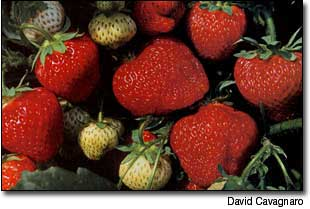

Strawberries are one of the easiest plants you can grow in your garden. Above: A harvest of 'Red Chief' shows off the eye-candy appeal of strawberries. Top of Page 79: a planting of 'Honeoye.' Both of these varieties are mid-season June-bearers that give a generous harvest all at once if you want to freeze your crop. 'Honeoye' is known for its perfumey flavor and 'Red Chief' for its resistance to disease.